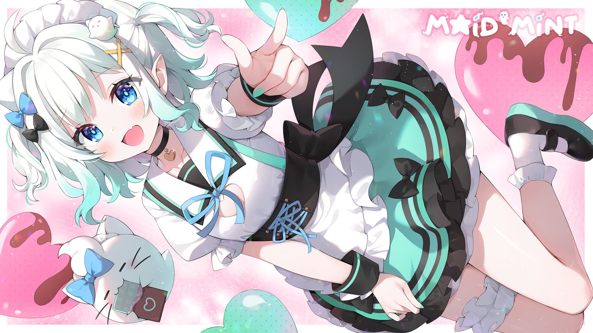
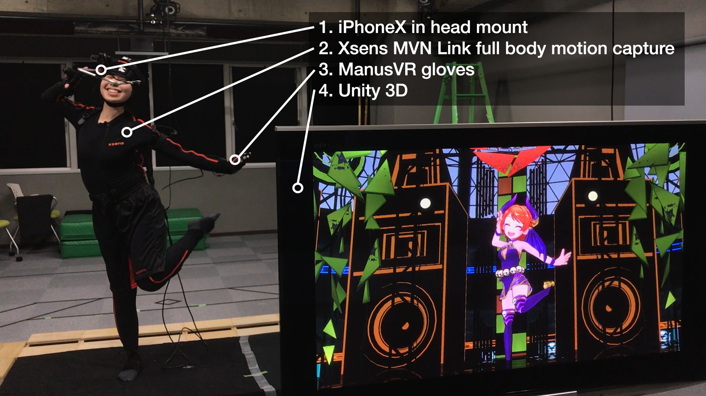
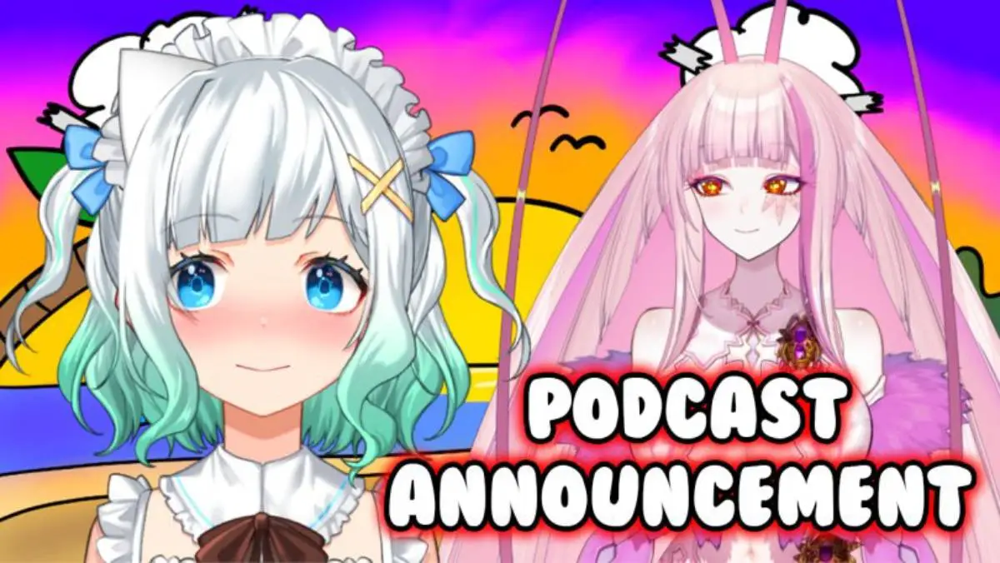
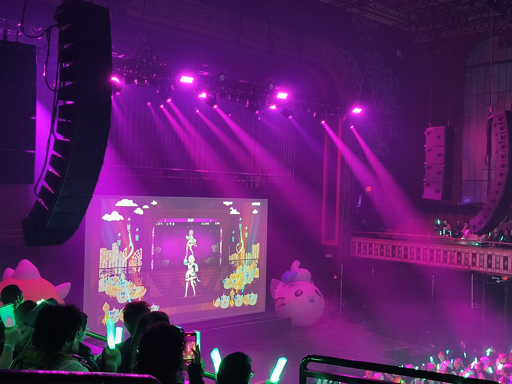

Mint Fantome, the Ghost Maid VTuber

Mint Fantome is an active indie VTuber who primarily streams on YouTube.
What is a VTuber?

A VTuber is a streamer who uses motion capture technology to control a virtual avatar instead of appearing as themselves.
The reason a content creator might choose this medium may vary; some do it out of concern for their privacy, while others simply see the medium as a better way to express themselves.
Whatever the reason may be, many people have found it to be an enjoyable experience, and some have even made a career out of it, with a big surge in the medium during the 2019 pandemic.
Mint Fantome
Mint Fantome debuted on July 24, 2020, on YouTube. Her mix of variety streams and personality attracted people who would become her fanbase. She enjoyed modest success, reaching up to 12,000 subscribers with around 200 active viewers during her livestreams.
On March 19, she announced her intention to retire. This was met with lots of sadness from her fans, but she alluded to following a big opportunity. She said her goodbyes on a "graduation stream," having reached a subscriber count of 17,000.

On April 1, Mint Fantome made a surprise appearance on a podcast hosted by a fellow VTuber named Matara Kan. In the following days, she confirmed her return to VTubing, with her subscriber count rising to around 28,000. On her return stream, her subscriber count reached 100,000, with 25,000 real-time viewers at its peak. She has been streaming ever since.
Some achievements:
- Reaching 449,000 subscribers.
- Performing at Anime NYC in a main-stage 3D concert with VTubers from Phase Connect.
- Performing and organizing the "Fantome Thiefs Revenge" 3D concert with fellow VTubers Dokibird and others.
- Participating in fellow VTuber Nimi Nightmare's charity event for St. Jude Children's Research Hospital.
- Getting two new models designed by professional illustrator Ayamy.
- Organizing and performing in a 3D jazz concert, "From Mint With Love," at Peppermint Club in Los Angeles.
- Starting an idol trio, Densetsu.exe, with VTubers Victoria Roman and Phoebe Chan.

Aiboos
Aiboos are the name of the fans who follow Mint. Originally called Wisps, the name was changed to Aiboos after Mint's return. The reason was that "Wisp" was hard to pronounce, according to Mint.
Aiboos come from many different corners of the world: Europe, Asia, America, and even places as small as Costa Rica. Their shared interest has fostered the creation of an online community of people who like to share and connect with each other.
In the end, all Aiboos share a dedication to supporting Mint. What drives people to support a stranger, I cannot say, but people have found joy in her work as an entertainer and will keep supporting her for as long as possible.